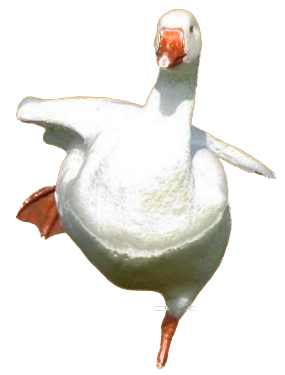

Cargando datos…

después pon el teléfono en el visorAjusta hasta que cada círculo quede centrado en su tubo (los centros van a 62 mm).
Gíralo de lado, con la pantalla hacia los tubos, y míralo como unos binoculares.
Empieza solo cuando el teléfono quede quieto.